Cambridge AS9618 | Paper 2 | Section 9: Algorithm design and problem-solving
Abstraction and abstract models
Flexible-depth lesson
S9.01 | Learn from the diagrams, test the method, then choose the practice you need.
Choose a Quick, Full or Deep route
Quick route
Use the diagnostic, learning objectives, first worked example and foundation question. Stop once the learner can explain the central distinction accurately.
Full route
Use every knowledge-point material set, the worked method, the terminology check and all questions.
Deep route
Add the prerequisite refresher, ask learners to connect the concept checklist, discuss the labelled extension and complete a transfer question without a model answer.
Part 1 | optional depth
Prerequisite knowledge and quick diagnostic
Recall the main conclusion from Lesson 045: Paper 1 integrated review and error clinic.
Give one accurate definition or method step before continuing. If it is missing, revisit only that prerequisite.
Part 2 | knowledge-point material sets
Learn each point through visuals
Follow the map, the three-part explanation and the concrete cue. Open precise wording only after the idea is clear.
Open the concept checklist and choose what to teach
abstraction
essential details
irrelevant detail
abstract model
01
S9.01 · comparison
Abstraction · Essential details · Irrelevant detail · Abstract model
Concept map
abstractionessential detailsirrelevant detailabstract model
See how it works
Contrastexplain its need and benefits, then produce an abstract model containing only details essential to the problem
Evidenceuse abstraction to retain essential details in an abstract model
DecisionAbstraction is required both as a concept and as a practical modelling skill
S9.01 diagrams
1 / 3
01
Diagram · 1 of 3
Produce an abstract model
Open text transcript
Underline the required output and keep only details that affect it.
Create verb-based sub-problems with distinct responsibilities.
State each sub-problem's input and output.
Check that the parts collectively meet every requirement without gaps or overlap.
The result is a natural-language responsibility plan ready for a later representation lesson.
02
Concrete example · 2 of 3
Abstraction: keep the details that affect the algorithm
Open text transcript
Keep details that affect an input, rule, calculation, constraint or output.
Ignore decoration that does not change the required result.
Ask whether removing a detail would change the result.
Explain why a detail is relevant or irrelevant rather than only labelling it.
03
Diagram · 3 of 3
Keep or ignore details
Open text transcript
Interactive abstraction filter
Open precise syllabus wording
Understand abstraction, its purpose/benefits and creation of an abstract model.
Abstraction is required both as a concept and as a practical modelling skill: explain its need and benefits, then produce an abstract model containing only details essential to the problem.
Supporting diagram library
1 / 21
01
Diagram · 1 of 21
Constraints stop algorithms from wandering off
Open text transcript
A range of 0 to 100 requires both limits to be checked.
Exactly 10 supplied readings means the plan must process all 10 readings.
A capacity of 30 bookings means a request beyond the remaining capacity must be rejected.
Each stated constraint must have a specific consequence in the plan.
02
Diagram · 2 of 21
Use IPOC before choosing a representation
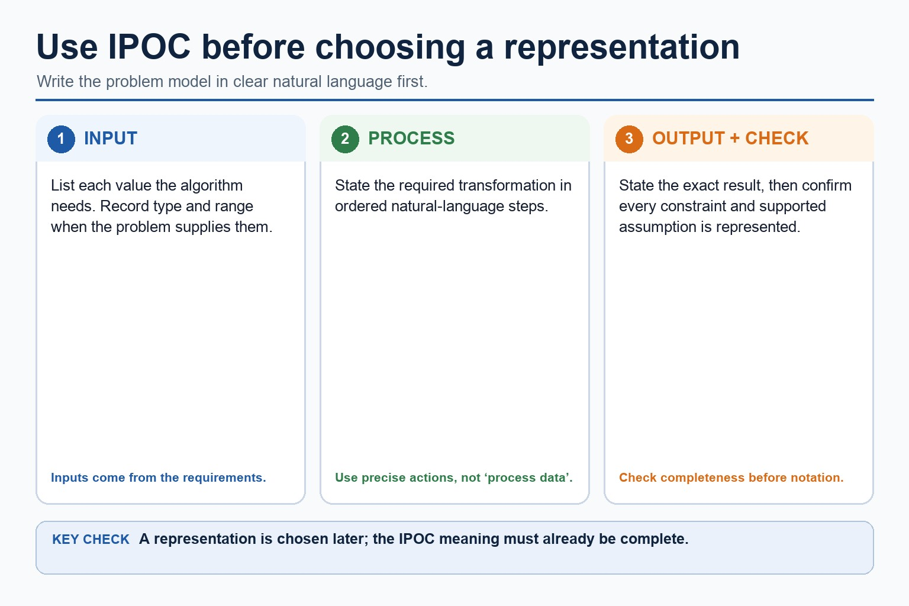
Open text transcript
List each input and record its type or range when the problem supplies them.
Write the required processing in ordered natural-language steps.
State the exact required output.
Record constraints and supported assumptions.
Confirm completeness before choosing a representation.
03
Diagram · 3 of 21
Binary search repeatedly halves a sorted list
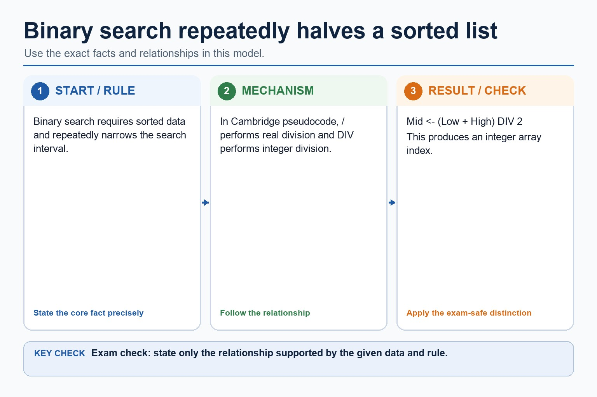
Open text transcript
Binary search requires sorted data and repeatedly narrows the search interval.
In Cambridge pseudocode, / performs real division and DIV performs integer division.
Mid <- (Low + High) DIV 2
04
Diagram · 4 of 21
Trace binary search on sorted data
Open text transcript
Interactive binary trace
Target in [13, 21, 42, 56, 70, 88, 91]
Choose a target to trace low, mid and high.
05
Diagram · 5 of 21
Choosing the right search
Open text transcript
Comparison
Linear search
Binary search
Data order
works on unsorted or sorted data
requires sorted data
checks each item one by one
checks middle and discards half
06
Diagram · 6 of 21
Trace linear search
Open text transcript
Interactive linear trace
Target in [13, 42, 56, 70]
Choose a target to trace comparisons.
07
Diagram · 7 of 21
Cambridge pseudocode is the exam format
Open text transcript
Initialise Found to FALSE and Index to the first valid position.
While the target is not found and Index remains valid, compare the current item.
Close the match selection with ENDIF, then increment Index.
ENDWHILE closes the surrounding search loop.
08
Diagram · 8 of 21
Why the sorts move data differently
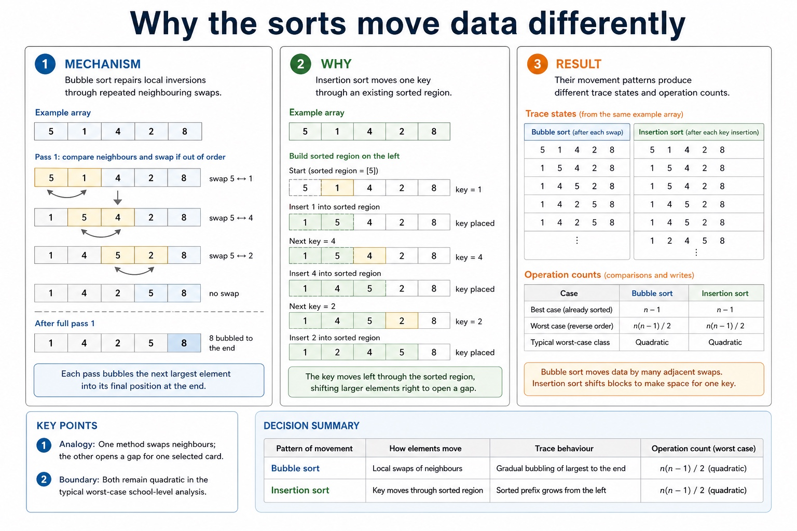
Open text transcript
Bubble sort repairs local inversions through repeated neighbouring swaps.
Insertion sort moves one key through an existing sorted region.
Their movement patterns produce different trace states and operation counts.
09
Diagram · 9 of 21
How insertion sort grows a sorted region
Open text transcript
Treat the first item as an already sorted region.
Remove the next key and shift larger sorted items right.
Insert the key into the gap, expanding the sorted region.
10
Diagram · 10 of 21
Why a trace follows state
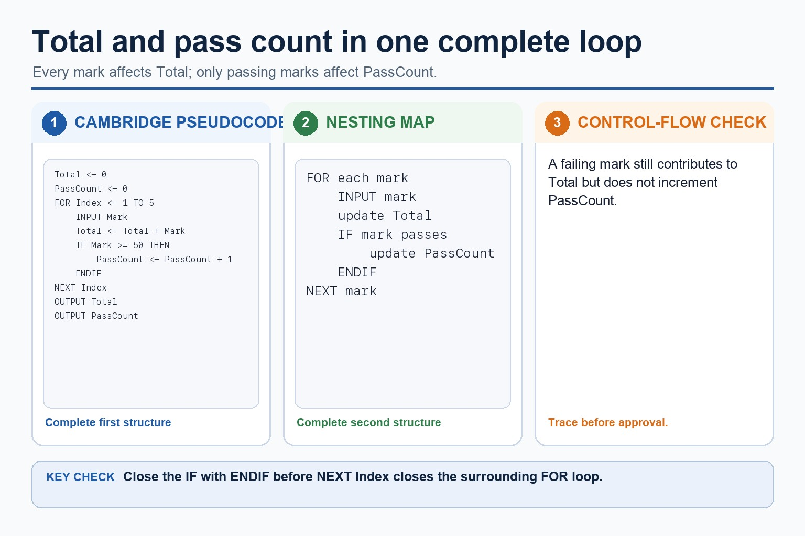
Open text transcript
Record the variables and list at the agreed trace point.
Apply exactly one comparison, swap, shift or insertion step.
Write the new state before advancing the loop.
11
Diagram · 11 of 21
When the number of values is known, use a count-controlled loop
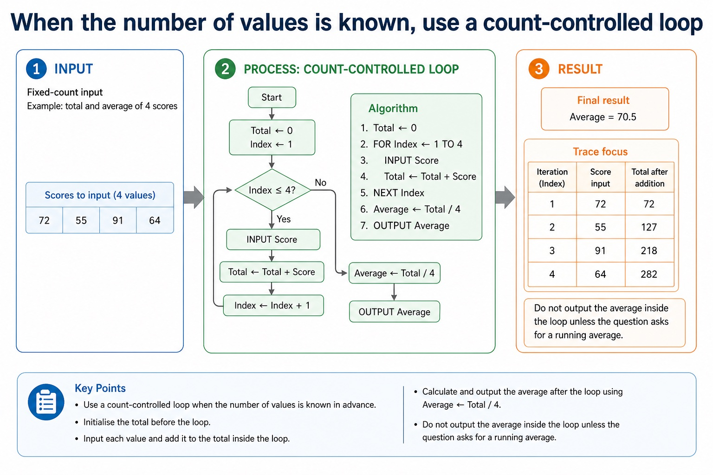
Open text transcript
Fixed-count input
Example: total and average of 4 scores
Total <- 0
FOR Index <- 1 TO 4
INPUT Score
Total <- Total + Score
NEXT Index
Average <- Total / 4
12
Diagram · 12 of 21
The starting value decides whether the algorithm is honest
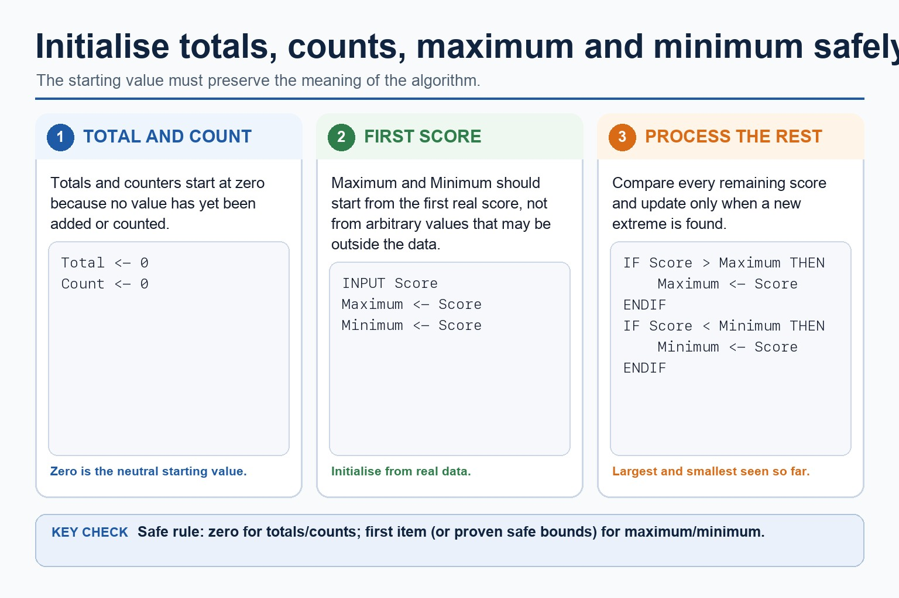
Open text transcript
Initialise totals and counters to zero before processing values.
Initialise Maximum and Minimum from the first real input value or from proven safe bounds.
Compare each remaining value with Maximum and Minimum.
Replace Maximum only when a larger value is found and Minimum only when a smaller value is found.
13
Diagram · 13 of 21
Four running-value patterns
Open text transcript
Knowledge explanation
Start with a concrete list, then name the algorithm pattern.
Variable
Update rule
Total <- Total + Value
running sum of values
Count <- Count + 1 when a value is processed or meets a condition
number of items
14
Diagram · 14 of 21
Use Cambridge assignment and loop keywords in exam answers
Open text transcript
Initialise Total and PassCount to zero before processing five marks.
Every input mark is added to Total.
Increment PassCount only when Mark is at least 50 and close that selection with ENDIF.
Output Total and PassCount after NEXT Index.
15
Diagram · 15 of 21
When input stops on a special value, do not process the sentinel
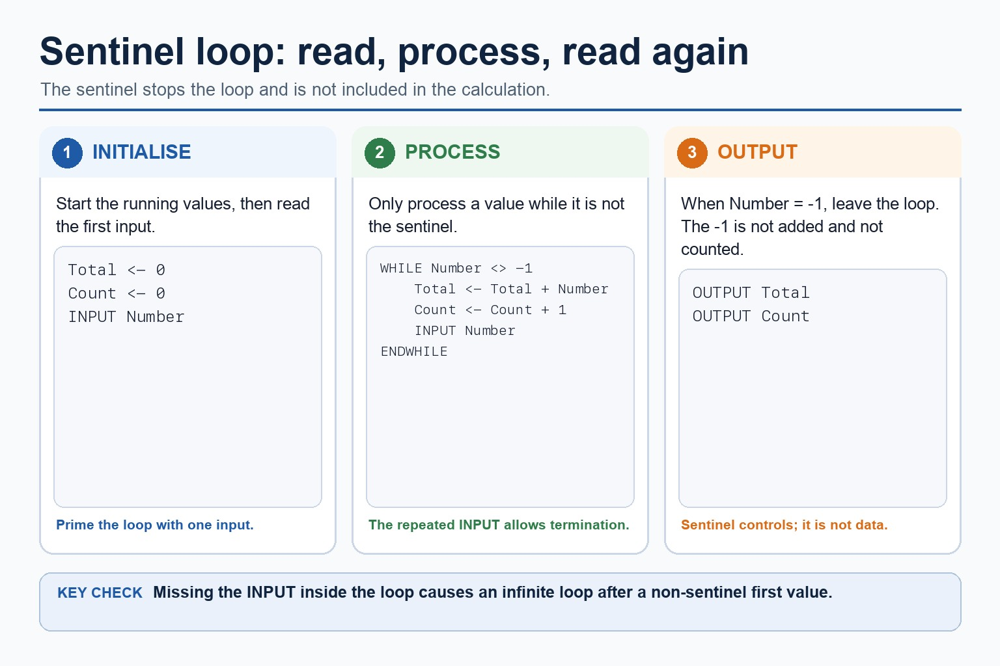
Open text transcript
Initialise Total and Count, then input the first Number.
While Number is not -1, add it to Total and increment Count.
Input the next Number at the end of the WHILE body before ENDWHILE.
The sentinel -1 stops the loop and is not added or counted.
16
Diagram · 16 of 21
Watch running variables change
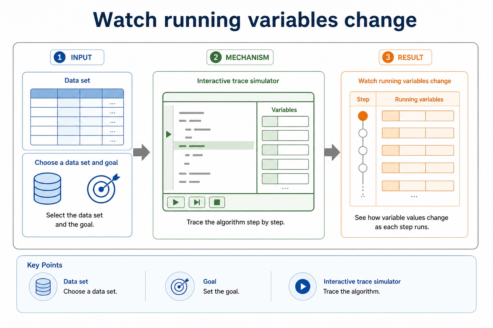
Open text transcript
Interactive trace simulator
Data set
Choose a data set and goal, then trace the algorithm.
17
Diagram · 17 of 21
Turn vague answers into mark-worthy answers
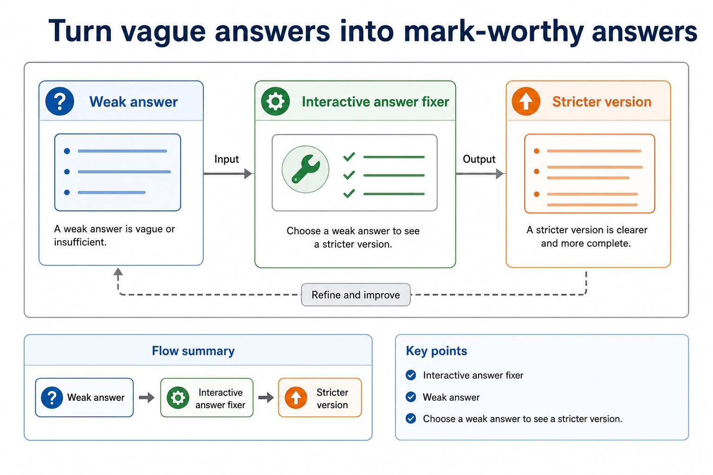
Open text transcript
Interactive answer fixer
Weak answer
Choose a weak answer to see a stricter version.
18
Diagram · 18 of 21
Match the scenario to the correct algorithm pattern
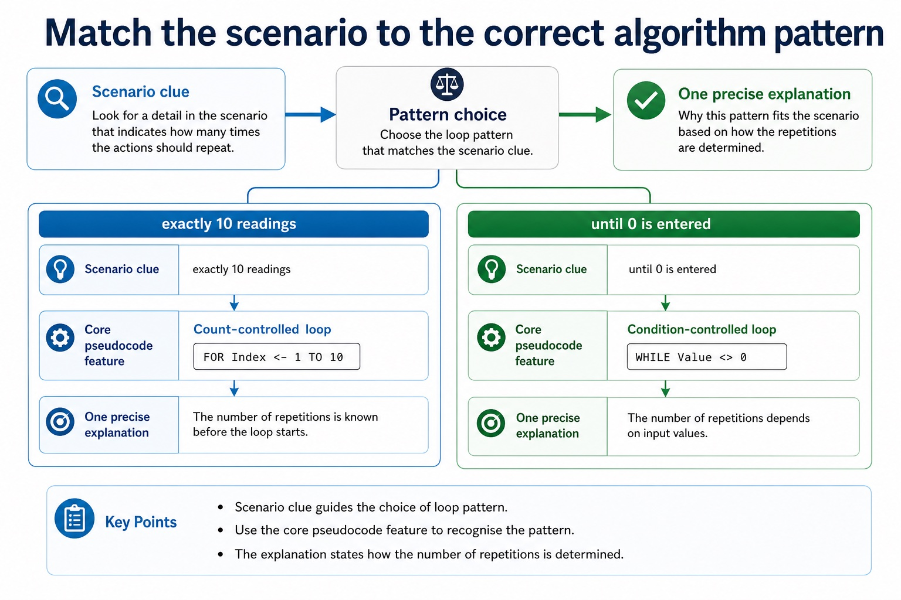
Open text transcript
Pattern choice
Scenario clue
Core pseudocode feature
One precise explanation
exactly 10 readings
Count-controlled loop
FOR Index <- 1 TO 10
The number of repetitions is known before the loop starts.
19
Diagram · 19 of 21
Paper 2 wants readable Cambridge-style pseudocode
Open text transcript
Initialise Total and Count, then input the first Value.
While Value is not -1, add it to Total and increment Count.
Input the next Value inside the WHILE body before ENDWHILE.
If Count is greater than zero, calculate Average using real division and output it.
Java may support understanding but is not the Cambridge pseudocode answer format.
20
Diagram · 20 of 21
Section 9 in one page
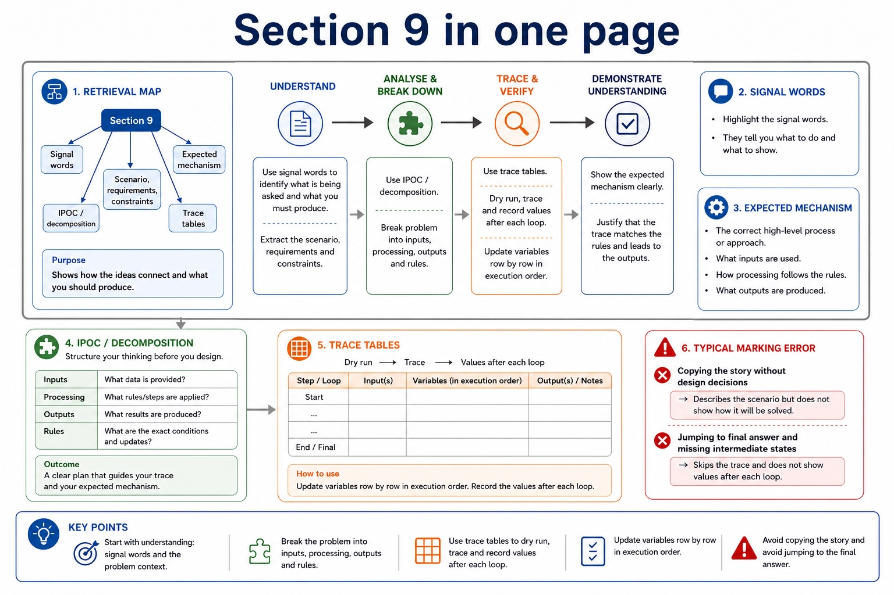
Open text transcript
Retrieval map
Signal words
Expected mechanism
Typical marking error
IPOC / decomposition
scenario, requirements, constraints
break problem into inputs, processing, outputs and rules
copying the story without design decisions
21
Diagram · 21 of 21
Turn question wording into an algorithm plan
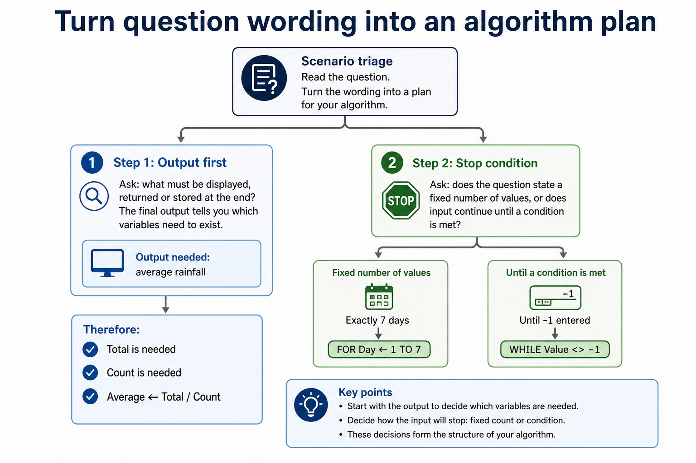
Open text transcript
Scenario triage
Step 1: Output first
Ask: what must be displayed, returned or stored at the end? The final output tells you which variables need to exist.
Output needed: average rainfall
Therefore:
Total is needed
Count is needed
Average <- Total / Count
Apply the idea
Worked method
01Design a result-processing solution
02Keep only student ID and required marks, decompose the task into InputResults, ValidateResult, CalculateMean and OutputReport, record meaningful identifiers and IPO, refine CalculateMean into defined steps, use a range logic statement, and…
Open precise terminology and exam facts
Abstraction is required both as a concept and as a practical modelling skill: explain its need and benefits, then produce an abstract model containing only details essential to the problem.
Abstraction removes each irrelevant detail that does not affect the required inputs, rules, constraints or outputs. Producing an abstract model means recording the essential details that remain: the data, relationships and processes needed to solve the problem, not merely listing what was ignored.
Decomposition breaks a problem into smaller sub-problems with distinct responsibilities. Express the resulting design as program modules with clear inputs, processing and outputs; a module may later be implemented as a procedure that performs an action or a function that returns a value.
Abstraction decides what belongs in the model; decomposition decides how the retained problem is divided. The modules must connect into one complete solution and must not omit a requirement.
Algorithm design review: define an algorithm as a solution expressed as a sequence of defined steps; use abstraction to retain essential details in an abstract model; use decomposition to express the problem as connected modules; and choose meaningful identifiers recorded in an identifier table.
Beyond syllabus / 延伸知识（不要求背诵）
the same algorithm can be expressed in many programming languages; its logic should remain independent of syntax.
Part 3 | select by learner need
Practice by question type
writerecallfoundation6 marks
Question 1. Write an abstract model for a school meal bill, then decompose it into named program modules and identify one likely procedure and one likely function.
Show answer and marking guidance
Answer: retains meal choice, quantity and price as essential details; states the calculation and total output in the abstract model; excludes a justified irrelevant detail such as tray colour; expresses the problem as connected modules with distinct responsibilities; identifies a suitable procedure module that performs an action; identifies a suitable function module that returns a value
Marking guidance: Do not award only a list of omitted details, vague Part1/Part2 labels or modules that do not collectively solve the problem.
Common error: For the command word write, perform that exact action; do not replace it with an unrelated fact.
showrecallapplication8 marks
Question 2. Develop an abstract, modular algorithm for processing ten valid marks, then show one refinement level and the central validation logic statement.
Show answer and marking guidance
Answer: abstract model keeps only essential data, rules and output; decomposition expresses connected program modules; identifier table uses meaningful names, types and purposes; IPO design forms a complete solution; sequence, selection and iteration are used appropriately; one representation is accurate and convertible without changing meaning; stepwise refinement replaces a complex step with implementable substeps; logic statement correctly enforces the required mark range
Marking guidance: Do not award isolated terminology when the design omits the required model, modules, refinement or logic.
Common error: Do not repeat the same point in different words; each mark needs a separate idea or method step.
explainexplaintransfer3 marks
Question 3. Explain how abstraction and abstract models would be applied in a suitable computing context.
Show answer and marking guidance
Answer: Abstraction removes each irrelevant detail that does not affect the required inputs, rules, constraints or outputs. Producing an abstract model means recording the essential details that remain: the data, relationships and processes needed to solve the problem, not merely listing what was ignored. Decomposition breaks a problem into smaller sub-problems with distinct responsibilities. Express the resulting design as program modules with clear inputs, processing and outputs; a module may later be implemented as a procedure that performs an action or a function that returns a value. Abstraction decides what belongs in the model; decomposition decides how the retained problem is divided. The modules must connect into one complete solution and must not omit a requirement.
Marking guidance: Each mark needs a relevant point linked to the stated context.
Common error: Do not copy the worked example unchanged; transfer the method and check it against the new context.
Part 4 | close when ready
Summary and exam reminders
Summary
Define abstraction and abstract models with the exact technical vocabulary expected by the syllabus.
Use the lesson method on a fresh context and show the intermediate decision, representation or calculation.
Match the shape of the answer to the command word and the available marks.
Check the final answer against the scenario instead of repeating a memorised sentence.
Common error to correct
Students often start coding before defining the output. Correction: an algorithm is easier to design when the required result is known first.
Exam technique
Follow the command word: state gives a fact; explain links a cause to a consequence; compare covers both sides.
Match the number of independent points or method steps to the available marks.
For abstraction and abstract models, use the exact technical term before applying it to the scenario.